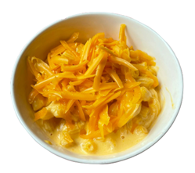

Bienvenidos a mis recetas! En este sitio encontraras recetas de comida de diferentes partes del mundo que me encantan y las pondre en esta pagina para que tu tengas el gusto de prepararlas en tu casa de una forma muy sencilla
| Receta | Ingredientes | Preparación | Resultado |
|---|---|---|---|
| Macarrones con Queso |
|
|
 |
| Mazorca dulce |
|
|
|
| Alitas BBQ |
|
|
Recetas caseras de todo el mundo, nos ubicamos en
Bogotá, Colombia